Our team discovered that many people face three core obstacles in their fitness journey: a disconnect between diet plans and training goals, a lack of standardized references for exercise execution, and difficulty in correlating weight changes with daily behavior. Users often don't know what to eat that day, have blind spots in their understanding of standard movements, and cannot correct their posture through textual descriptions alone, while hiring a personal trainer is too expensive. The numbers on the scale don't connect logically, triggering anxiety or leading to giving up. This results in difficulty sticking to the routine, poor results, and even injuries. We believe that only by addressing these real pain points can we design truly useful products. Therefore, we decided to develop software that integrates diet planning, a professional exercise library, fitness plans, and weight monitoring, allowing users to receive closed-loop guidance on a single platform: providing healthy eating plans, accompanying animated standard movement exercises, and displaying weight trends. We believe that only by connecting the data chain of "eat-train-monitor" can health management become executable, traceable, and sustainable. This is our team's response to "making technology serve real needs."
After analyzing 4 academic papers on gamified health — Sun et al.’s (2025) “Is more always better? An S-shaped impact of gamification feature richness on exercise adherence intention,” Alzghoul’s (2024) “The Effectiveness of Gamification in Changing Health-related Behaviors,” dos Santos et al.’s (2023) “Gamification as a health education strategy of adolescents at school: Protocol for a systematic review and meta-analysis,” and Quan et al.’s (2022) “Factors Influencing Users’ Continuance Intention to Use Mobile Fitness APPs” — and 4 commercial products (like Keep, Elevate, BetterMe, Fitness), we identified:
Bio: A 26-year-old office worker who struggles to maintain a workout habit. Traditional fitness apps bore him.
Goals: Build a consistent habit through engaging, game-like rewards.
Must-use Features: XP System, Trophy Room, Daily Streak Calendar.
Bio: A 30-year-old marketing manager who works out 4 times a week. She needs precise tracking for progressive overload.
Goals: Track TDEE accurately and log precise sets/reps without wasting time.
Must-use Features: TDEE Calculator, Detailed Workout Logs.
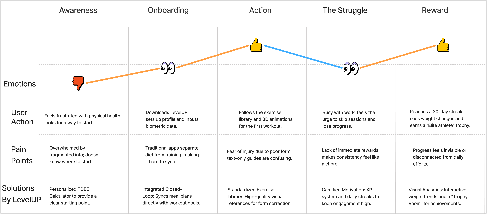
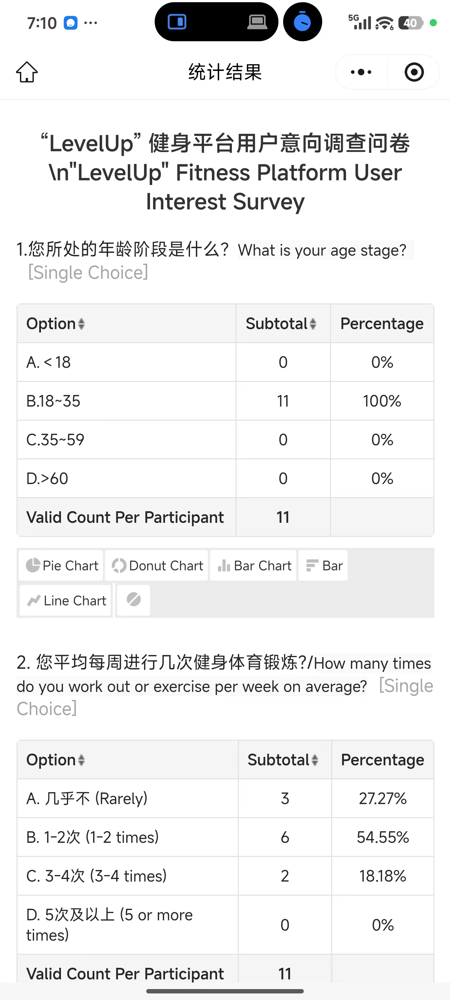
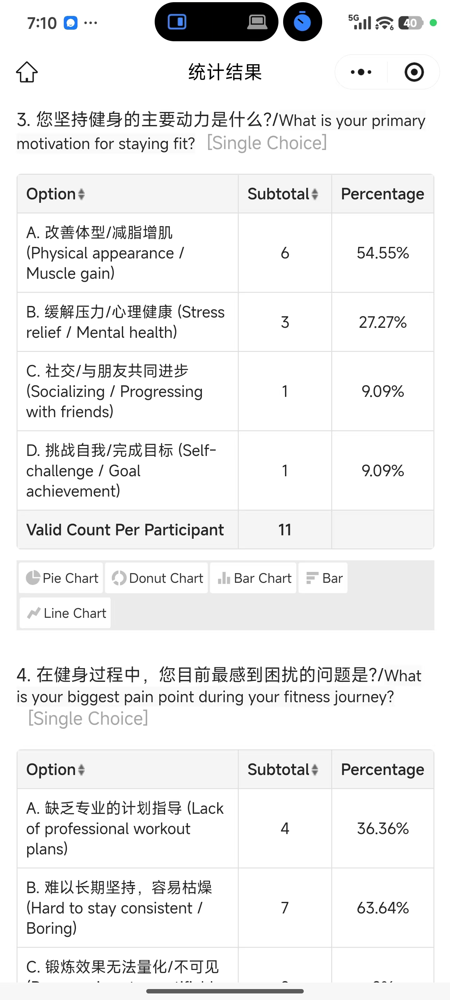
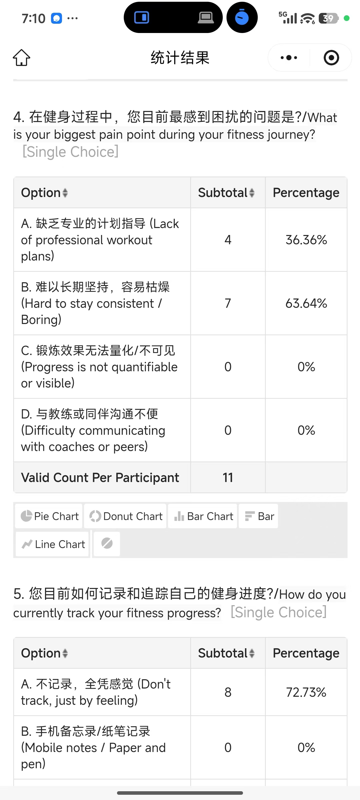
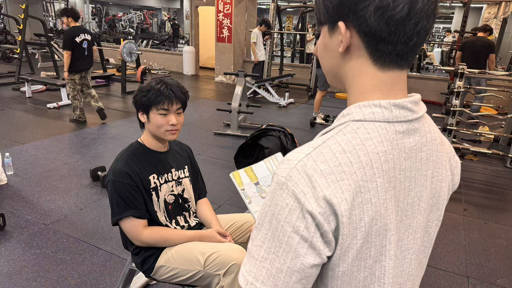
Survey Data: We conducted a quantitative survey with 11 participants to validate these pain points. The results confirmed that 63% of users struggle with exercise form correction without a personal trainer, highlighting the need for a standardized visual library.
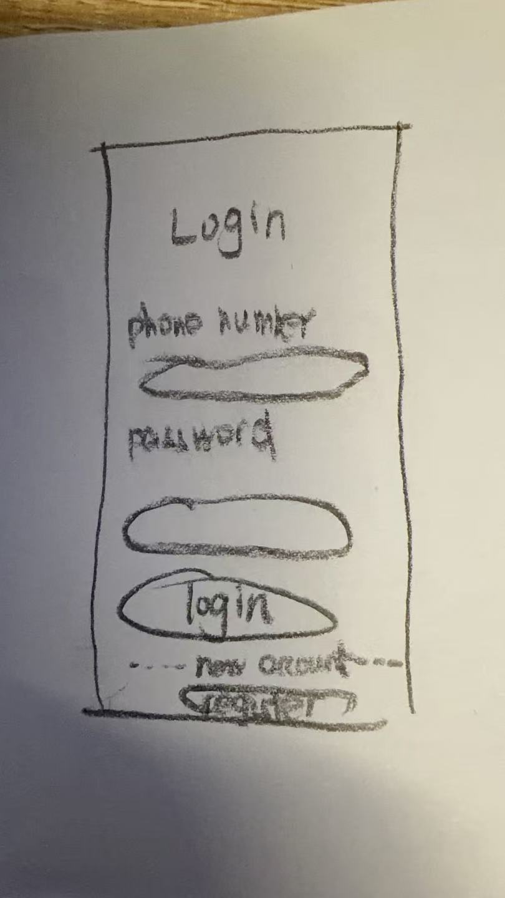
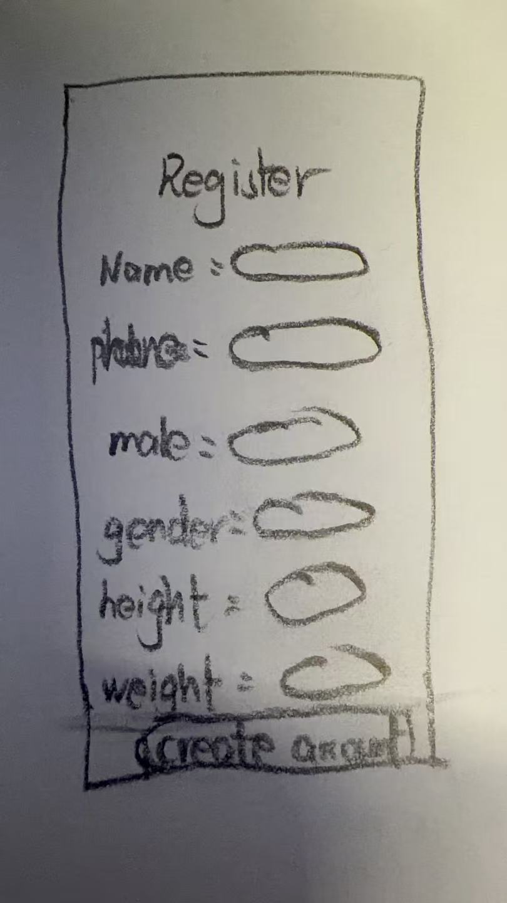
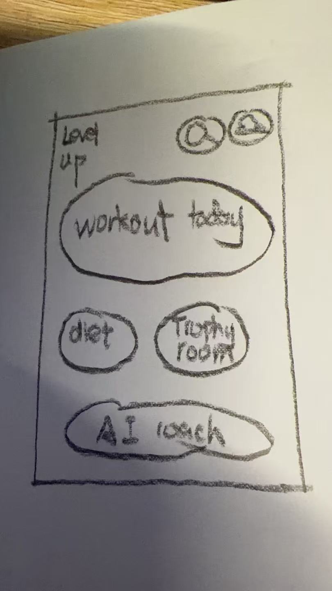
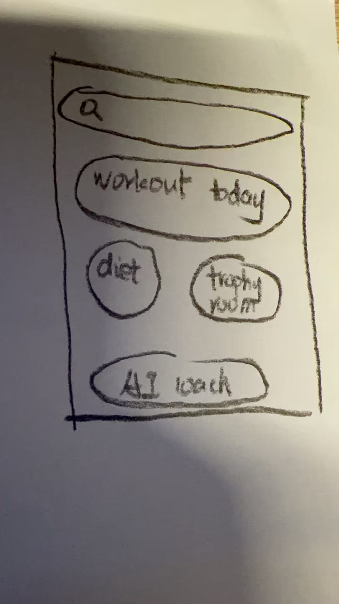
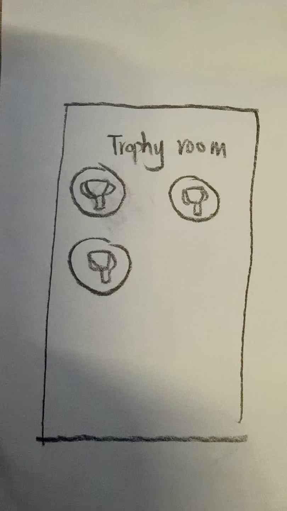
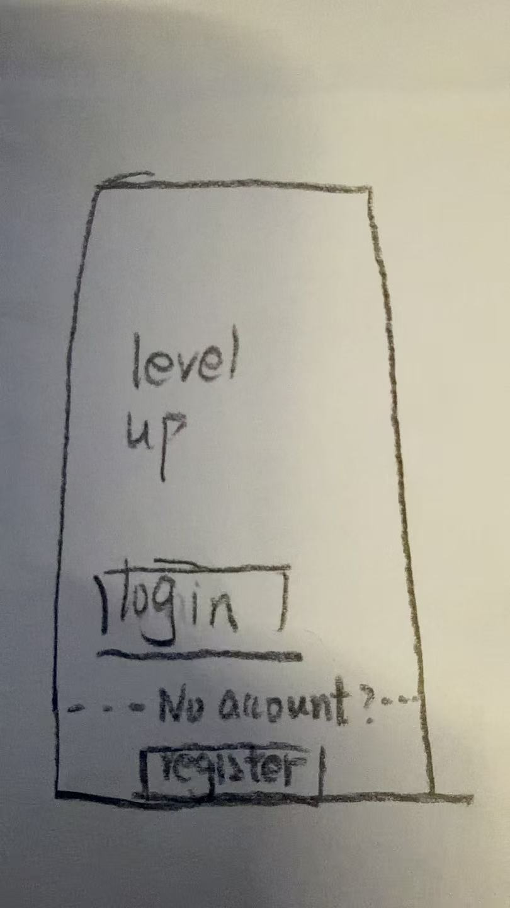
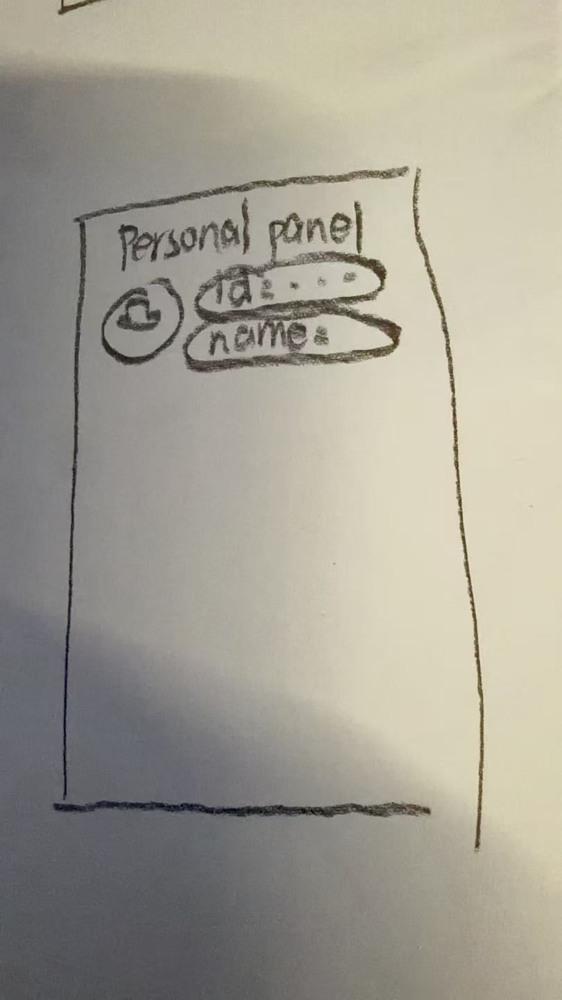
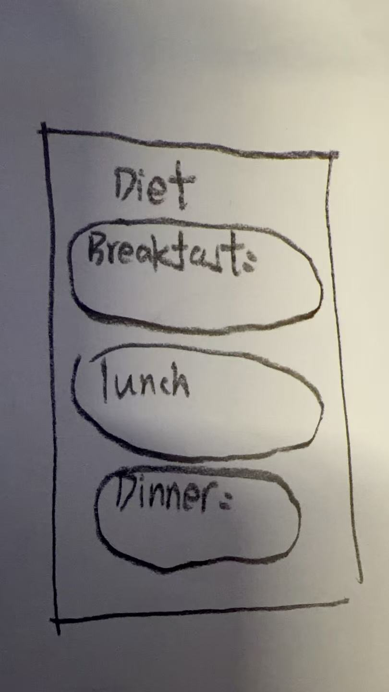
Alternative 1: A dashboard focused entirely on charts and graphs. (Rejected: Too boring for beginners, lacks the "Playful" requirement).
Alternative 2 (Chosen): A profile-centric UI where the user's Avatar, Level, and Trophies are prominent, blending exercise with gamification.
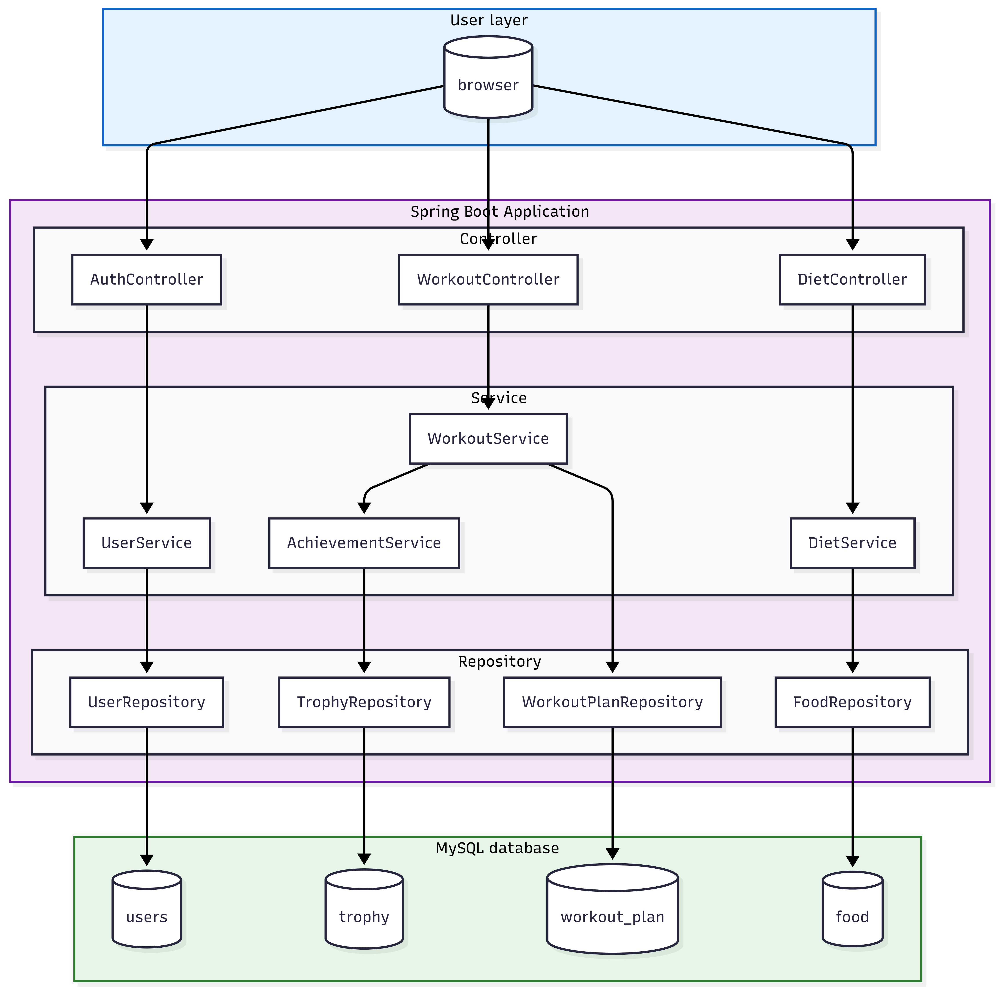
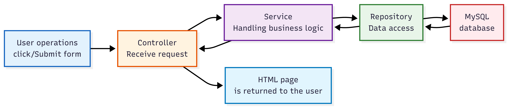
| Name / ID | Role & Specific Tasks Built |
|---|---|
| Zicheng Niu (2362392) | Frontend Code & UI: Built responsive views (signin, signup, profile), implemented tab-bars, and calendar logic. |
| Weiyi Zheng (2361878) | UX Research & Testing: Conducted usability tests, created personas, defined the "playful" requirements. |
| Linghui Zhu (2363060) | UI Design & Content: Designed Figma prototypes, created vector assets (trophies, icons), established style guide. |
| Mariia Starostina (2583073) | Backend Code & Database: Implemented Spring Boot APIs, designed MySQL schema for User, Trophies, and Workouts. |
Method: Tested the "Alpha" version with 3 real users at the local gym.
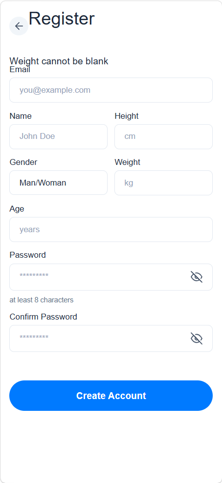
Before: Cluttered layout with poor visual hierarchy and navigation issues.
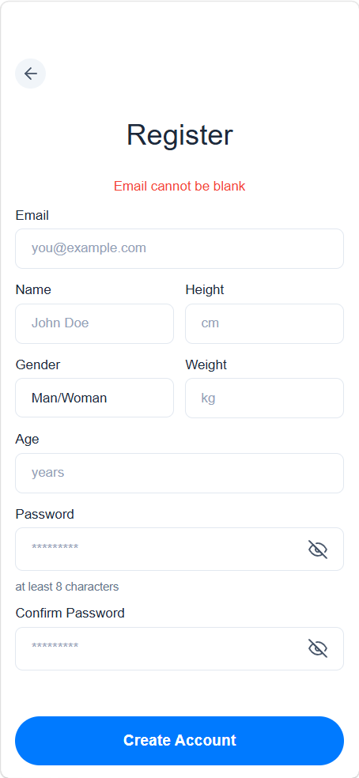
After: Fixed navigation, clear error handling, and optimized layout for mobile screens.
Social/Ethical Implications: We ensured our system promotes healthy habits rather than obsessive tracking by focusing on positive reinforcement (XP) instead of penalizing missed days heavily. To further embrace inclusive design, future iterations will consider accessibility modes for users with physical limitations.
Generative AI was used strictly according to permissions for "vibe coding" core backend logic and debugging responsive layouts. Below are two specific examples using the POA framework:
P (Prompt): "Write a Java method for a Spring Boot controller that takes a muscle group (e.g., 'Chest'), groups database exercises by category, and randomly selects them based on a predefined ratio array (e.g., 2:1:1)."
O (Outcome): The AI provided a functional base algorithm using Collections.shuffle(). However, there was a "state loss" bug: the exercises previewed on the frontend didn't match the final plan saved in the database because the backend was regenerating the list upon confirmation.
A (Action): I modified the hardcoded ratio arrays to match our fitness design requirements. To fix the state loss, I discarded the AI's secondary generation logic and manually added hidden <input> tags in the Thymeleaf template to pass the exact exerciseIds back to the controller.
P (Prompt): "In my Thymeleaf homepage, the virtual pet canvas overlaps with the text on small mobile screens, and the XP progress bar gets compressed to 0px height. How can I fix this responsive layout?"
O (Outcome): The AI accurately identified that the flexbox container was causing the issue. It provided CSS fixes using flex-shrink: 0 and min-height. The progress bar fix worked perfectly, but the pet canvas was still slightly clipped at the bottom on certain aspect ratios.
A (Action): I applied the flex-shrink: 0 solution for the XP bar. For the pet canvas, I refined the AI's code by manually implementing absolute positioning with top: 50%; transform: translateY(-50%); to ensure the virtual pet remains perfectly vertically centered regardless of screen size.